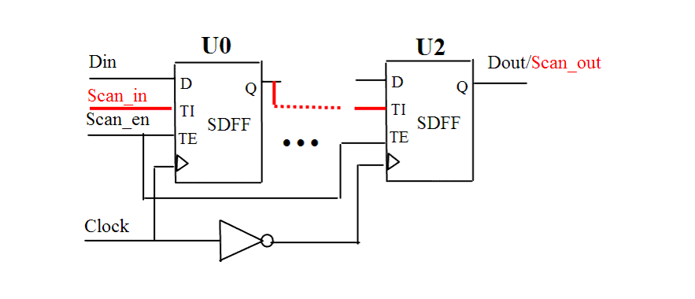

| Description | If you don't have a single clock edge per scan chain, you will either skip some flip-flops or lose some shift during scan chain load/unload steps. This can be fixed using a lookup latch (i.e., inserting a latch when changing clock edge), but it is a good idea to use a single clock edge per scan chain. |
| Policy | DESIGN |
| Ruleset | DFT |
| Language | VHDL/Verilog |
| Type | Hardware |
| Severity | Error |
This is an example of invalid Verilog code, followed by a circuit diagram that illustrates the problem:
module ntl_dft13_top(Clock, Scan_en, Scan_in, Din, Dout); input Clock, Scan_en, Scan_in, Din; output Dout; reg net_01, net_02; wire Clock_inv; NOT I0(Clock_inv, Clock); // NTL_DFT13 fires -- two clock edges in a scan chain // Scan DFF -- SDFF SDFF U0(.D(Din), .CP(Clock), .TI(Scan_in), .TE(Scan_en), .Q(net_01)); SDFF U1(.D(net_01), .CP(Clock), .TI(net_01), .TE(Scan_en), .Q(net_02)); SDFF U2(.D(net_02), .CP(Clock_inv), .TI(net_02), .TE(Scan_en), .Q(Dout)); endmodule